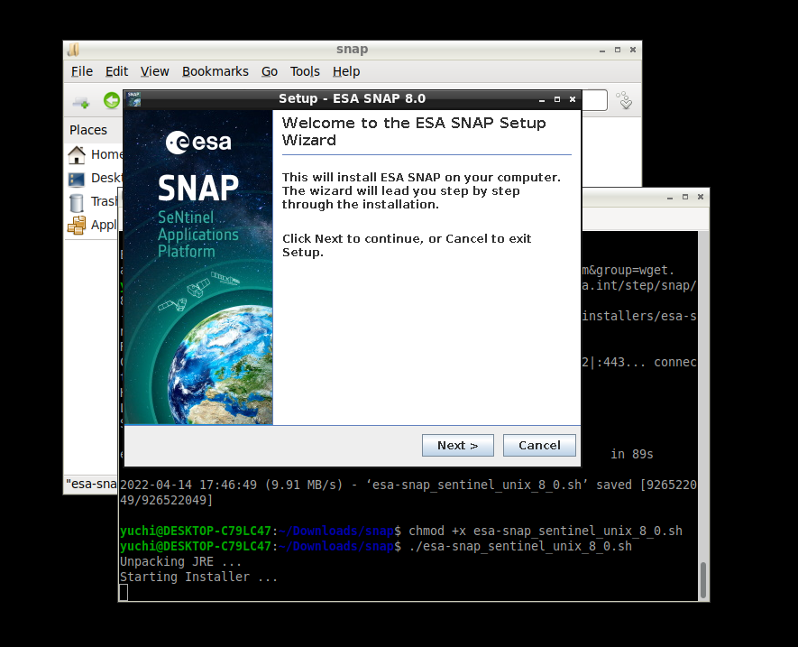

Setup and Problem-Solving in WSL2
Notes about working in WSL!
How to set up working X11 forwarding on WSL2?
- Installing the desktop (GUI) in WSL
1 | |
Then by the following command, we can install the light ubuntu desktop
1 | |
In the next step, the VcXsrv Windows X Server utility should be installed in windows.
After installation, we should open VCxsrv software and set the Initial setting.
Then we should run the following commands in ubuntu terminal1.
make sure to check ‘disable access control’ when configure Xlancher
Add the following to your ~/.bashrc2:
1 | |
*: If you use VcXSrv you can enable public access for your X server by disabling Access Control on the Extra Settings.
Install SNAP in WSL
Download SNAP and Install
1 | |

All DONE! Enjoy SNAP in WSL.
Suddenly all worked out when download snap2stamps in WSL2, but not runing in actural windows..
Enjoy processing!